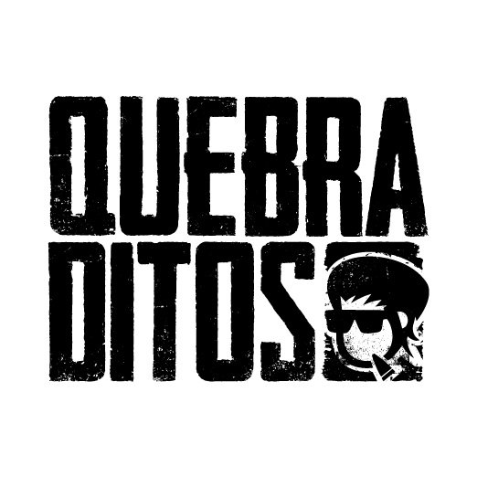

Quebraditos
Quebraditos es una banda de punk rock. Se formó en 1998

Integrantes
@nicolas_momia
Voz y guitarra
@laloquebradito
Bajo, voces y coros
@lucas.dittus
Guitarra
@danialvarezbatero
Bateria
Año
Disco
2003
Nunca Fui Muy Popular
2007
Mexico y Boedo
2011
Quebraditos
2017
Cardiomiopatia De Takotsubo
2022
Necropsia de un Infortunio
"Necropsia de un Infortunio es su ultimo disco"